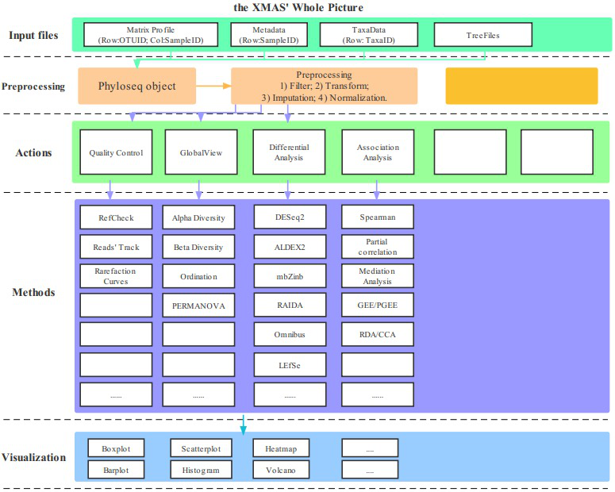

Chapter 3 Material in this tutorial
3.1 Resources
There are two resources in this tutorial. One is from in-house 16s standard pipeline and the other is from metaphlan2 workflow. All these data have been stored into XMAS 2.0.
3.1.1 DADA2
dada2 result from standardized_analytics_workflow_R_function.
/home/xuxiaomin/project/standardized_analytics_workflow_R_function/demo_data/16S/process/xdada2/dada2_res.rds
/home/xuxiaomin/project/standardized_analytics_workflow_R_function/demo_data/16S/process/fasta2tree/tree.nwk
/home/xuxiaomin/project/standardized_analytics_workflow_R_function/demo_data/16S/metadata.txt
3.1.2 Metaphlan2
The result of the in-house Metaphlan2/3 pipeline.
/home/xuxiaomin/project/standardized_analytics_workflow_R_function/demo_data/MGS/metaphlan2_merged.tsv
/home/xuxiaomin/project/standardized_analytics_workflow_R_function/demo_data/MGS/metadata.txt
3.2 Overview of the design of XMAS package

Figure 3.1: The Overview of the design of XMAS package
XMAS 2.0 contains several modules, such as preprocessing, actions, methods and visualization. Furthermore, the extended parts of actions module give this package more flexible ability to add new parts. We also separate scripts into calculation and visualization parts by their names. The functions’ prefix with run is used for calculation, and the functions’ prefix with plot is used for visualization.
3.2.1 Description
XMAS 2.0 is comprised of R functions for in-house use, including functions for statistical, functional, and visual analysis of microbiol data, and is still underdevelopment.
Here, we provide the XMAS 2.0 releases and users can download it.
3.2.2 Installation of dependent packages
Requiring the R-base version more than 3.6.3. Some of the dependencies are uploaded to CRAN or bioconductor website, but others, which are underdevelopment are only obtained from github website. Dependencies version (optional but not required):
- Biostrings (>= 2.22.0)
- BiocGenerics (>= 0.32.0)
- phyloseq (>= 1.30.0)
- forcats (>= 0.5.1)
- stringr (>= 1.4.0)
- ggplot2 (>= 3.3.5)
- readr (>= 1.4.0)
- ALDEx2 (>= 1.18.0)
- dplyr (>= 1.0.8)
- tibble (>= 3.1.6)
- DT (>= 0.18)
- purrr (>= 0.3.4)
- metagenomeSeq (>= 1.28.0)
- edgeR (>= 3.28.1)
- DESeq2 (>= 1.26.0)
- limma (>= 3.42.2)
- mbzinb (>= 0.2)
- pscl (>= 1.5.5)
- methods (>= 3.6.3)
- matrixStats (>= 0.58.0)
- RAIDA (>= 1.0)
- compositions (>= 2.0-4)
- vegan (>= 2.5-7)
- coin (>= 1.4-2)
- SummarizedExperiment (>= 1.16.1)
- MASS (>= 7.3-53.1)
- Biobase (>= 2.46.0)
- nlme (>= 3.1-152)
- tidyr (>= 1.1.3)
- corncob (>= 0.2.0)
- Maaslin2 (>= 1.7.3)
- ggrepel (>= 0.9.1)
- ggpubr (>= 0.4.0)
- ggalluvial (>= 0.12.3)
- Hmisc (>= 4.5-0)
- RColorBrewer (>= 1.1-2)
- umap (>= 0.2.8.0)
- ape (>= 5.6-2)
- cowplot (>= 1.1.1)
- Rtsne (>= 0.15)
- ade4 (>= 1.7-18)
- scales (>= 1.1.1)
- ggVennDiagram (>= 1.2.1)
- impute (>= 1.68.0)
- pheatmap (>= 1.0.12)
There are two methods to install the aforementioned packages.
3.2.2.1 Packages in CRAN & Bioconductor
install.packages("pacman")
library(pacman)
pacman::p_load(Biostrings, BiocGenerics, phyloseq, forcats, stringr, ggplot2,
readr, ALDEx2, dplyr, tibble, DT, purrr, metagenomeSeq, stats, edgeR,
DESeq2, methods, limma, pscl, matrixStats, compositions, vegan, coin,
SummarizedExperiment, MASS, Biobase, nlme, tidyr, Maaslin2, ggrepel,
ggpubr, ggalluvial, Hmisc, umap, Rtsne, ape, cowplot, scales, ade4,
ggVennDiagram, impute, pheatmap)3.2.2.2 Packages in github
# Step 1: Install devtools
if (!requireNamespace(c("remotes", "devtools"), quietly=TRUE)) {
install.packages(c("devtools", "remotes"))
}
library(devtools)
#library(remotes)
# Step 2: install corncob package
devtools::install_github("bryandmartin/corncob")
# remotes::install_github("bryandmartin/corncob")3.2.2.3 Packages from website
Manual download of RAIDA_1.0.tar.gz from here and install locally
R CMD INSTALL RAIDA_*.tar.gz
install.packages("RAIDA_1.0.tar.gz", repos = NULL, type = "source")Manual download of mbzinb_0.2.tar.gz from here and install locally
R CMD INSTALL mbzinb_*.tar.gz
install.packages("mbzinb_0.2.tar.gz", repos = NULL, type = "source")3.2.3 Installation
Get the XMAS released version from Release version
3.2.3.1 Installation in linux or Mac os through command line
Using git command to download the whole repository and then install this package by linux command line.
git clone git@gitlab.com:BangzhuoTong/xmas.git
R CMD build xmas
R CMD INSTALL XMAS_*.tar.gz3.3 Future plan
XMAS 2.0, which developed for data analysis, is part of the X-therapia platform and we will update it with more and more data analysis module and also add new functions according to the in-house requirements to support the company.
We welcome any comments and requirements and hope users give issues on the gitlab issues module.
3.4 Systematic Information
devtools::session_info()## ─ Session info ──────────────────────────────────────────────────────────────────────────────────────────────────────────────
## setting value
## version R version 4.1.2 (2021-11-01)
## os macOS Monterey 12.2.1
## system x86_64, darwin17.0
## ui RStudio
## language (EN)
## collate en_US.UTF-8
## ctype en_US.UTF-8
## tz Asia/Shanghai
## date 2022-07-29
## rstudio 2022.07.1+554 Spotted Wakerobin (desktop)
## pandoc 2.18 @ /Applications/RStudio.app/Contents/MacOS/quarto/bin/tools/ (via rmarkdown)
##
## ─ Packages ──────────────────────────────────────────────────────────────────────────────────────────────────────────────────
## package * version date (UTC) lib source
## assertthat 0.2.1 2019-03-21 [1] CRAN (R 4.1.0)
## bookdown 0.24 2021-09-02 [1] CRAN (R 4.1.0)
## brio 1.1.3 2021-11-30 [1] CRAN (R 4.1.0)
## bslib 0.3.1 2021-10-06 [1] CRAN (R 4.1.0)
## cachem 1.0.6 2021-08-19 [1] CRAN (R 4.1.0)
## callr 3.7.0 2021-04-20 [1] CRAN (R 4.1.0)
## cli 3.3.0 2022-04-25 [1] CRAN (R 4.1.2)
## colorspace 2.0-3 2022-02-21 [1] CRAN (R 4.1.2)
## crayon 1.5.0 2022-02-14 [1] CRAN (R 4.1.2)
## DBI 1.1.2 2021-12-20 [1] CRAN (R 4.1.0)
## desc 1.4.1 2022-03-06 [1] CRAN (R 4.1.2)
## devtools 2.4.3 2021-11-30 [1] CRAN (R 4.1.0)
## digest 0.6.29 2021-12-01 [1] CRAN (R 4.1.0)
## dplyr * 1.0.8 2022-02-08 [1] CRAN (R 4.1.2)
## ellipsis 0.3.2 2021-04-29 [1] CRAN (R 4.1.0)
## evaluate 0.15 2022-02-18 [1] CRAN (R 4.1.2)
## fansi 1.0.2 2022-01-14 [1] CRAN (R 4.1.2)
## fastmap 1.1.0 2021-01-25 [1] CRAN (R 4.1.0)
## fs 1.5.2 2021-12-08 [1] CRAN (R 4.1.0)
## generics 0.1.2 2022-01-31 [1] CRAN (R 4.1.2)
## glue 1.6.2 2022-02-24 [1] CRAN (R 4.1.2)
## highr 0.9 2021-04-16 [1] CRAN (R 4.1.0)
## htmltools 0.5.2 2021-08-25 [1] CRAN (R 4.1.0)
## httr 1.4.2 2020-07-20 [1] CRAN (R 4.1.0)
## jquerylib 0.1.4 2021-04-26 [1] CRAN (R 4.1.0)
## jsonlite 1.8.0 2022-02-22 [1] CRAN (R 4.1.2)
## kableExtra 1.3.4 2021-02-20 [1] CRAN (R 4.1.2)
## knitr 1.37 2021-12-16 [1] CRAN (R 4.1.0)
## lifecycle 1.0.1 2021-09-24 [1] CRAN (R 4.1.0)
## magrittr 2.0.2 2022-01-26 [1] CRAN (R 4.1.2)
## memoise 2.0.1 2021-11-26 [1] CRAN (R 4.1.0)
## munsell 0.5.0 2018-06-12 [1] CRAN (R 4.1.0)
## pillar 1.7.0 2022-02-01 [1] CRAN (R 4.1.2)
## pkgbuild 1.3.1 2021-12-20 [1] CRAN (R 4.1.0)
## pkgconfig 2.0.3 2019-09-22 [1] CRAN (R 4.1.0)
## pkgload 1.2.4 2021-11-30 [1] CRAN (R 4.1.0)
## prettyunits 1.1.1 2020-01-24 [1] CRAN (R 4.1.0)
## processx 3.5.2 2021-04-30 [1] CRAN (R 4.1.0)
## ps 1.6.0 2021-02-28 [1] CRAN (R 4.1.0)
## purrr 0.3.4 2020-04-17 [1] CRAN (R 4.1.0)
## R6 2.5.1 2021-08-19 [1] CRAN (R 4.1.0)
## remotes 2.4.2 2021-11-30 [1] CRAN (R 4.1.0)
## rlang 1.0.2 2022-03-04 [1] CRAN (R 4.1.2)
## rmarkdown 2.13 2022-03-10 [1] CRAN (R 4.1.2)
## rprojroot 2.0.2 2020-11-15 [1] CRAN (R 4.1.0)
## rstudioapi 0.13 2020-11-12 [1] CRAN (R 4.1.0)
## rvest 1.0.2 2021-10-16 [1] CRAN (R 4.1.0)
## sass 0.4.0 2021-05-12 [1] CRAN (R 4.1.0)
## scales 1.1.1 2020-05-11 [1] CRAN (R 4.1.0)
## sessioninfo 1.2.2 2021-12-06 [1] CRAN (R 4.1.0)
## stringi 1.7.6 2021-11-29 [1] CRAN (R 4.1.0)
## stringr 1.4.0 2019-02-10 [1] CRAN (R 4.1.0)
## svglite 2.1.0 2022-02-03 [1] CRAN (R 4.1.2)
## systemfonts 1.0.4 2022-02-11 [1] CRAN (R 4.1.2)
## testthat 3.1.2 2022-01-20 [1] CRAN (R 4.1.2)
## tibble 3.1.6 2021-11-07 [1] CRAN (R 4.1.0)
## tidyselect 1.1.2 2022-02-21 [1] CRAN (R 4.1.2)
## usethis 2.1.5 2021-12-09 [1] CRAN (R 4.1.0)
## utf8 1.2.2 2021-07-24 [1] CRAN (R 4.1.0)
## vctrs 0.3.8 2021-04-29 [1] CRAN (R 4.1.0)
## viridisLite 0.4.0 2021-04-13 [1] CRAN (R 4.1.0)
## webshot 0.5.3 2022-04-14 [1] CRAN (R 4.1.2)
## withr 2.5.0 2022-03-03 [1] CRAN (R 4.1.2)
## xfun 0.30 2022-03-02 [1] CRAN (R 4.1.2)
## xml2 1.3.3 2021-11-30 [1] CRAN (R 4.1.0)
## yaml 2.3.5 2022-02-21 [1] CRAN (R 4.1.2)
##
## [1] /Library/Frameworks/R.framework/Versions/4.1/Resources/library
##
## ─────────────────────────────────────────────────────────────────────────────────────────────────────────────────────────────